package_tutorial
package_tutorial.RmdCovariate-Adjusted KM curves and probability
Example data
data(bmt)
bmt$arm <- bmt$group
bmt$arm = factor(as.character(bmt$arm),levels=c("2","1","3"))
#bmt$z10 = as.character(bmt$z10)
bmt$z3 = as.character(bmt$z3)
bmt$t2 = bmt$t2*12/365.25Adjusted KM
Coxph model
result1 = adjusted_KM (data = bmt,time = "t2", status = "d3",group = "arm",
covlist = c("z1","z3"),stratified_cox = "No", reference_group = NULL)
table_res1 = spread(result1, class, prob)
head(table_res1)
#> time 1 2 3
#> 1 0.03285421 0.9924879 0.9958479 0.9891992
#> 2 0.06570842 0.9849745 0.9916806 0.9784332
#> 3 0.32854209 0.9774536 0.9874946 0.9676936
#> 4 0.52566735 0.9699628 0.9833105 0.9570340
#> 5 1.05133470 0.9624386 0.9790928 0.9463641
#> 6 1.14989730 0.9548973 0.9748504 0.9357076
adjKM_plot(result1,data=bmt)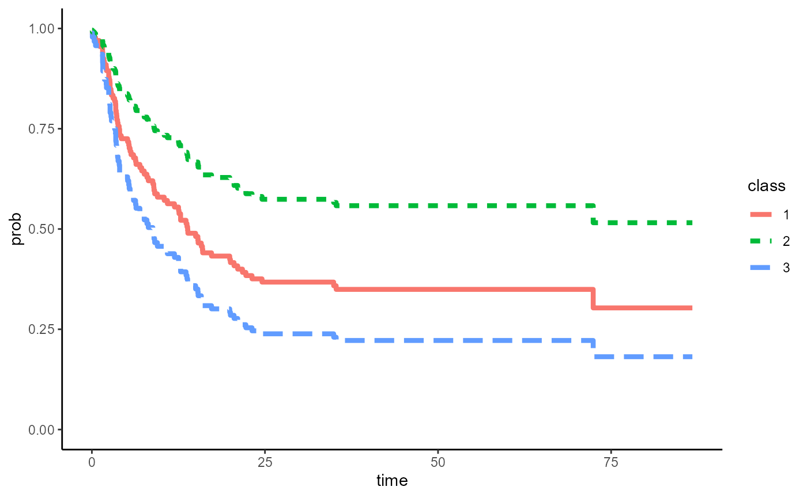
Alternative: use ggplot to finalize figure
Users can also use ggplot to customize figures as needed (e.g.change x ticks to every 6 months, change lab names)
ggplot(result1,aes(x=time,y = prob, group =class))+
geom_step(aes(linetype=class,color = class),size=1.5)+
theme_classic()+
ylim(c(0,1))+
scale_x_continuous(name="Time (Months)",breaks = seq(0,84,6))+
ylab("Probability")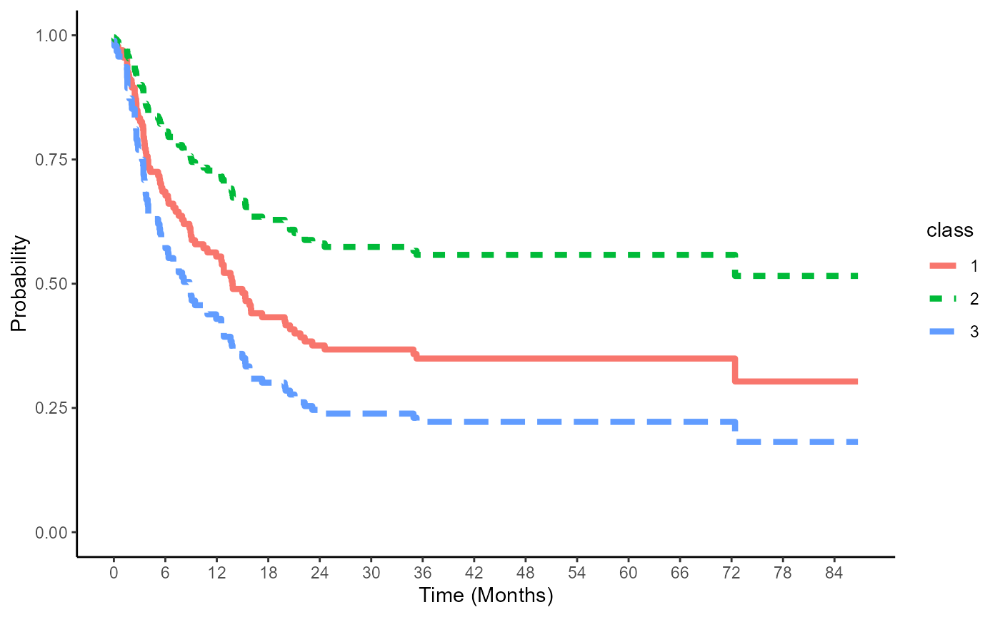
save results
write.csv(table_res1,"cox_KM_res.csv")Stratified Cox model: Gail & Byar’s approach
result2 = adjusted_KM (data = bmt,time = "t2", status = "d3",group = "arm",
covlist = c("z1","z3"),stratified_cox = "Yes", reference_group = "G&B")
table_res2 = spread(result2, class, prob)
head(table_res2)
#> time 1 2 3
#> 1 0.03285421 0.9740336 0.9816549 0.9780277
#> 2 0.06570842 0.9740336 0.9816549 0.9780277
#> 3 0.32854209 0.9740336 0.9816549 0.9780277
#> 4 0.52566735 0.9740336 0.9816549 0.9561560
#> 5 1.05133470 0.9740336 0.9816549 0.9342545
#> 6 1.14989730 0.9740336 0.9633376 0.9342545
adjKM_plot(result2,data=bmt)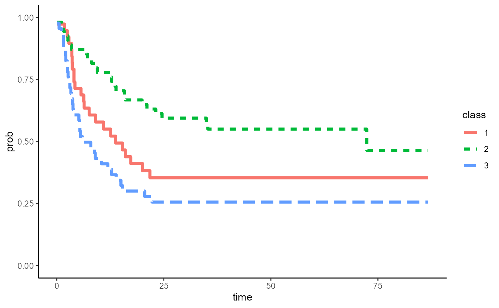
Alternative: use ggplot to finalize figure
ggplot(result2,aes(x=time,y = prob, group =class))+
geom_step(aes(linetype=class,color = class),size=1.5)+
theme_classic()+
ylim(c(0,1))+
scale_x_continuous(name="Time (Months)",breaks = seq(0,84,6))+
ylab("Probability")
save results
write.csv(table_res2,"GB_KM_res.csv")Stratified Cox model: Storer’s approach
result3 = adjusted_KM (data = bmt,time = "t2", status = "d3",group = "arm",
covlist = c("z1","z3"),stratified_cox = "Yes", reference_group = "arm:2")
table_res3 = spread(result3, class, prob)
head(table_res3)
#> time 1 2 3
#> 1 0.03285421 0.9720931 0.9816549 0.9783523
#> 2 0.06570842 0.9720931 0.9816549 0.9783523
#> 3 0.32854209 0.9720931 0.9816549 0.9783523
#> 4 0.52566735 0.9720931 0.9816549 0.9567957
#> 5 1.05133470 0.9720931 0.9816549 0.9352011
#> 6 1.14989730 0.9720931 0.9633376 0.9352011
adjKM_plot(result3,data=bmt)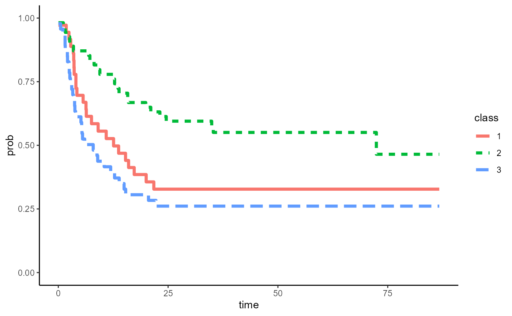
Alternative: use ggplot to finalize figure
ggplot(result3,aes(x=time,y = prob, group =class))+
geom_step(aes(linetype=class,color = class),size=1.5)+
theme_classic()+
ylim(c(0,1))+
scale_x_continuous(name="Time (Months)",breaks = seq(0,84,6))+
ylab("Probability")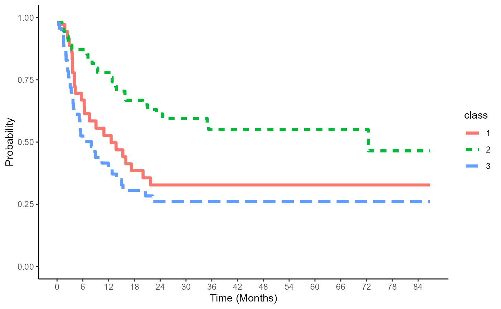
save results
write.csv(table_res3,"storer_KM_res.csv")Bootstrap CI
Cox PH model
result1_1 = boot_ci_adj_km(boot_n=100,ci_cut=c(0.025,0.975),data = bmt, time = "t2", status = "d3",group = "arm",
covlist = c("z1","z3"), stratified_cox = "No", reference_group = NULL)Figure
adjKM_CI_plot(result1_1,bmt)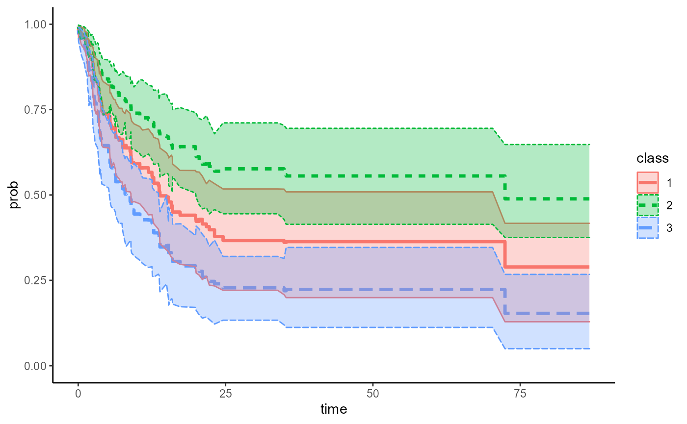
result1 = do.call(rbind,result1_1)
ggplot(data.frame(result1),aes(x=time,y = t_sub_mean, group =class ))+
geom_step(aes(linetype=class,color = class),size=1.2)+
geom_ribbon(aes(ymin=lower,ymax=upper,fill=class),alpha=0.3)+
ylim(c(0,1))+
theme_classic()+
scale_x_continuous(name = "Time (Months)",
breaks = seq(0, 84, 6)) +
ylab("Probability")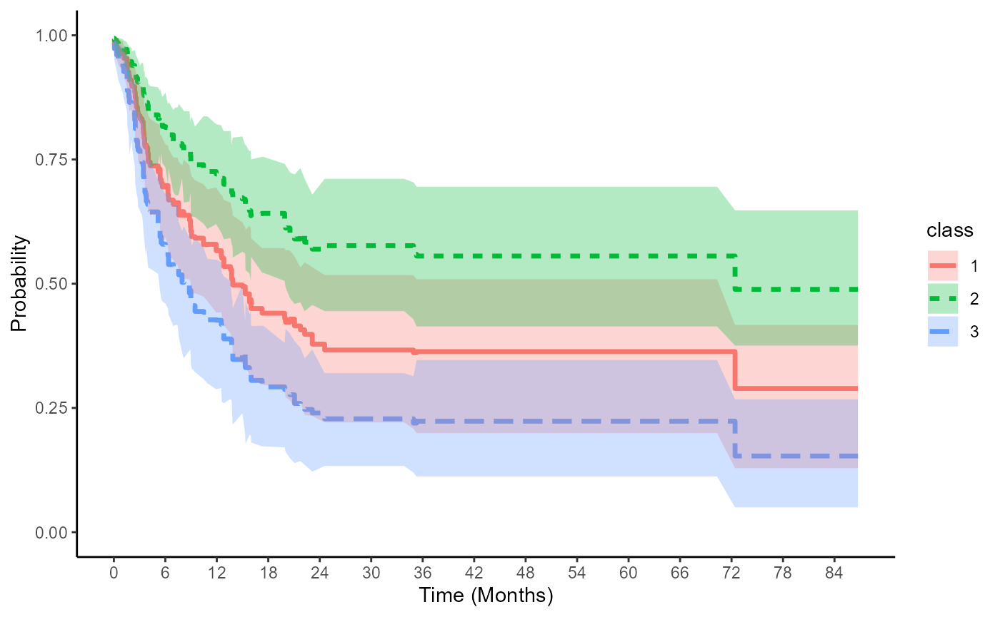
save bootstrap results
Stratified Cox: G&B for event = relapse
result1_2 = boot_ci_adj_km(boot_n=100,ci_cut=c(0.025,0.975),data = bmt, time = "t2", status = "d3",group = "arm",
covlist = c("z1","z3"), stratified_cox = "Yes", reference_group = "G&B")
adjKM_CI_plot(result1_2,bmt)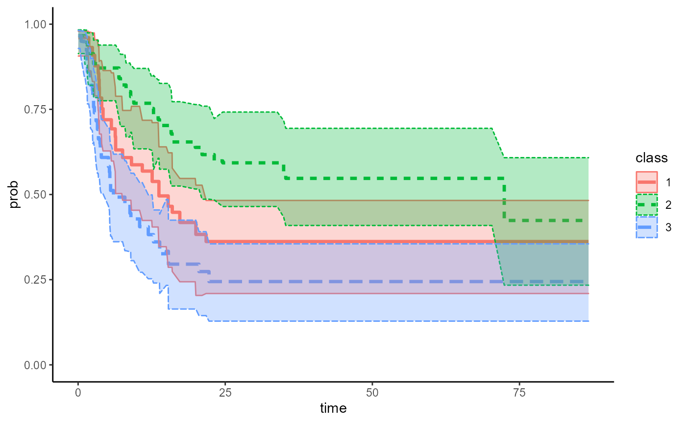
result2 = do.call(rbind,result1_2)
ggplot(data.frame(result2),aes(x=time,y = t_sub_mean, group =class ))+
geom_step(aes(linetype=class,color = class),size=1.2)+
geom_ribbon(aes(ymin=lower,ymax=upper,fill=class),alpha=0.3)+
ylim(c(0,1))+
theme_classic()+
scale_x_continuous(name = "Time (Months)",
breaks = seq(0, 84, 6)) +
ylab("Probability")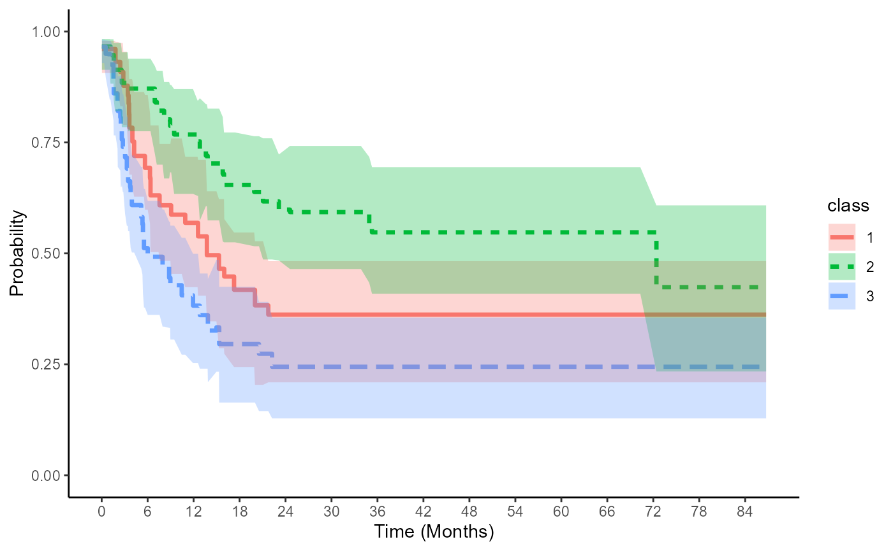
save bootstrap results
Stratified Cox: Storer for event = relapse
result1_3 = boot_ci_adj_km(boot_n=100,ci_cut=c(0.025,0.975),data = bmt, time = "t2", status = "d3",group = "arm",
covlist = c("z1","z3"), stratified_cox = "Yes", reference_group = "arm:2")Figure
adjKM_CI_plot(result1_3,bmt)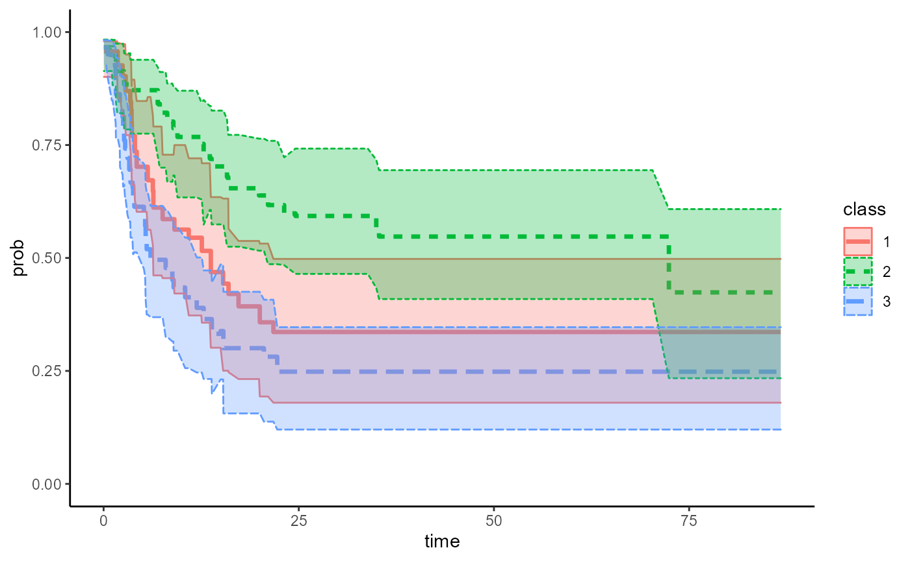
result3 = do.call(rbind,result1_3)
ggplot(data.frame(result3),aes(x=time,y = t_sub_mean, group =class ))+
geom_step(aes(linetype=class,color = class),size=1.2)+
geom_ribbon(aes(ymin=lower,ymax=upper,fill=class),alpha=0.3)+
ylim(c(0,1))+
theme_classic()+
scale_x_continuous(name = "Time (Months)",
breaks = seq(0, 84, 6)) +
ylab("Probability")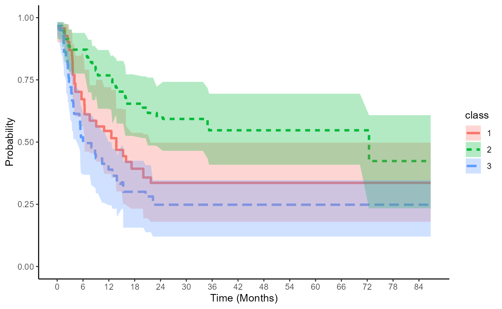
save bootstrap results
Covariate-Adjusted CIF curves and probability
Example data
data(bmt)
bmt$arm <- bmt$group
bmt$arm = factor(as.character(bmt$arm),levels=c("2","1","3"))
bmt$z3 = as.character(bmt$z3)
bmt$CenCI <- 0
for(ii in 1:137) {
if (bmt$d3[ii] == 0){
bmt$CenCI[ii] <- 0
}else {
if (bmt$d2[ii] == 1){
bmt$CenCI[ii] <- 1
}else{
bmt$CenCI[ii] <- 2}}
}
bmt$t2 = bmt$t2*12/365.25FG model for event = relapse
result1 =adjusted_CIF(data = bmt,time = "t2", status = "CenCI",group = "arm", covlist = c("z1","z3"),event_code=1,stratified = "No", reference_group = NULL)
table_res1 = spread(result1, class, prob)
head(table_res1)
#> time 1 2 3
#> 1 0.03285421 0.007337385 0.003216491 0.01206072
#> 2 0.06570842 0.007337385 0.003216491 0.01206072
#> 3 0.32854209 0.007337385 0.003216491 0.01206072
#> 4 0.52566735 0.007337385 0.003216491 0.01206072
#> 5 1.05133470 0.007337385 0.003216491 0.01206072
#> 6 1.14989730 0.007337385 0.003216491 0.01206072
adjCIF_plot(result1,data=bmt)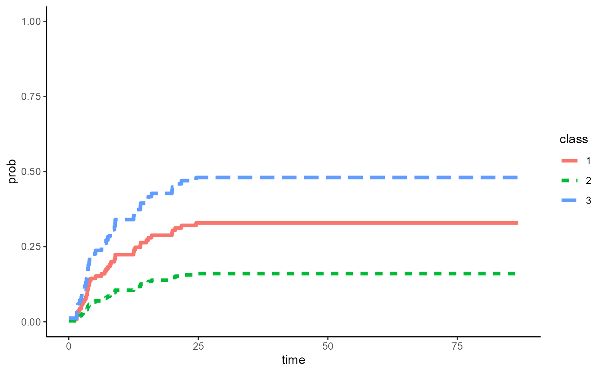
Use ggplot to finalize figure
Users can also use ggplot to customize figures as needed (e.g.change x ticks to every 6 months, change lab names)
ggplot(result1,aes(x=time,y = prob, group =class))+
geom_step(aes(linetype=class,color = class),size=1.5)+
theme_classic()+
ylim(c(0,1))+
scale_x_continuous(name="Time (Months)",breaks = seq(0,84,6))+
ylab("Probability")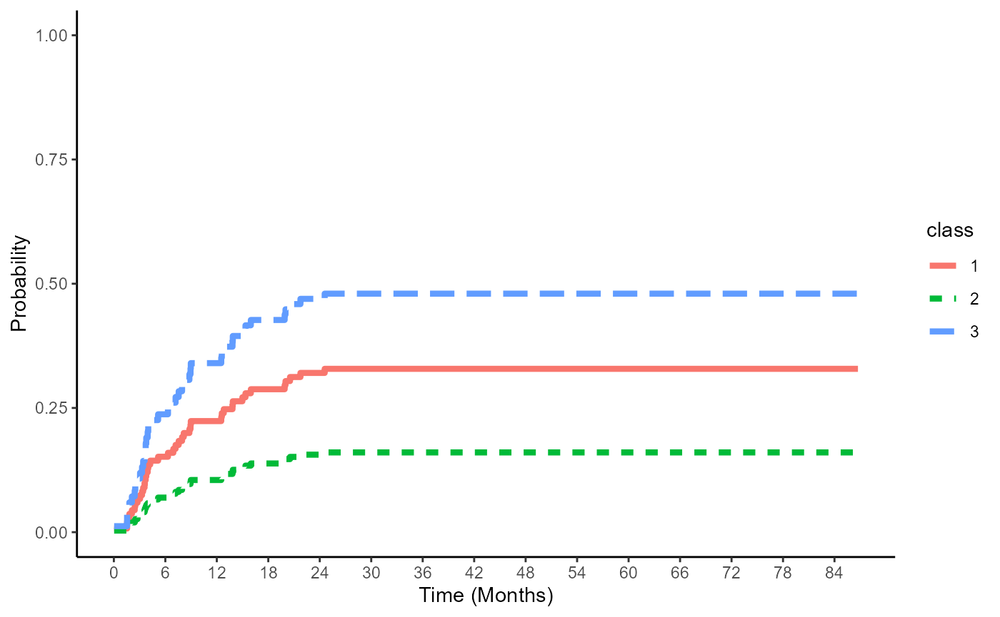
save results
write.csv(table_res1,"cox_CIF_res.csv")Stratified FG: G&B approach for event = relapse
result2 = adjusted_CIF(data = bmt,time = "t2", status = "CenCI",group = "arm",covlist = c("z1","z3"),event_code=1,stratified = "Yes", reference_group = "G&B")
table_res2 = spread(result2, class, prob)
head(table_res2)
#> time 1 2 3
#> 1 0.03285421 0.02588104 0.01835945 0.02200836
#> 2 0.06570842 0.02588104 0.01835945 0.02200836
#> 3 0.32854209 0.02588104 0.01835945 0.02200836
#> 4 0.52566735 0.02588104 0.01835945 0.02200836
#> 5 1.05133470 0.02588104 0.01835945 0.02200836
#> 6 1.14989730 0.02588104 0.01835945 0.02200836
adjCIF_plot(result2,data=bmt)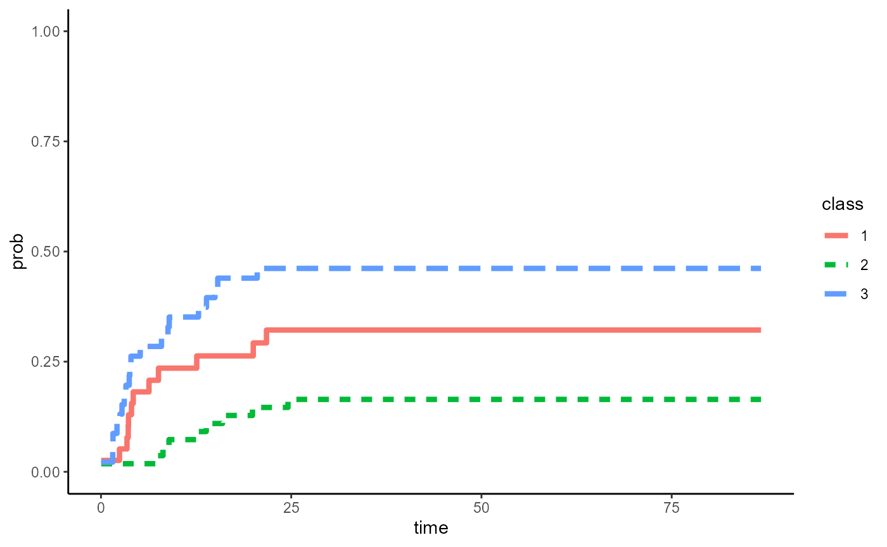
save results
write.csv(table_res2,"GB_CIF_res.csv")Use ggplot to finalize figure
ggplot(result2,aes(x=time,y = prob, group =class))+
geom_step(aes(linetype=class,color = class),size=1.5)+
theme_classic()+
ylim(c(0,1))+
scale_x_continuous(name="Time (Months)",breaks = seq(0,84,6))+
ylab("Probability")
Stratified FG: Storer’s approach for event = relapse
result3 = adjusted_CIF (data = bmt,time = "t2", status = "CenCI",group = "arm",covlist = c("z1","z3"),event_code=1,stratified = "Yes", reference_group = "arm:2")
table_res3 = spread(result3, class, prob)
datatable(table_res3)%>%
formatRound(columns=c("1","2","3"),digits = 3)
adjCIF_plot(result3,data=bmt)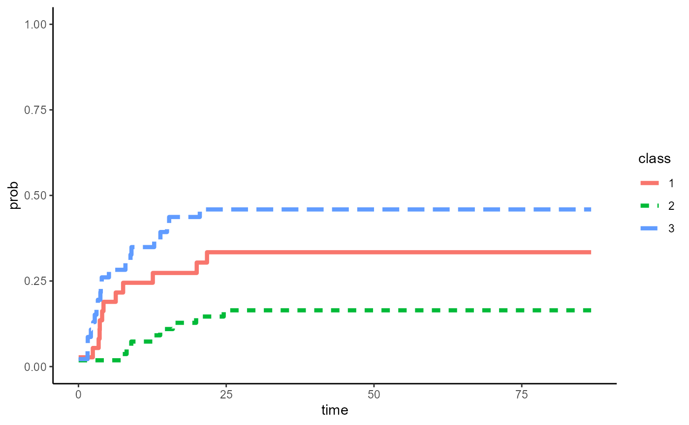
Alternative: use ggplot to finalize figure
ggplot(result3,aes(x=time,y = prob, group =class))+
geom_step(aes(linetype=class,color = class),size=1.5)+
theme_classic()+
ylim(c(0,1))+
scale_x_continuous(name="Time (Months)",breaks = seq(0,84,6))+
ylab("Probability")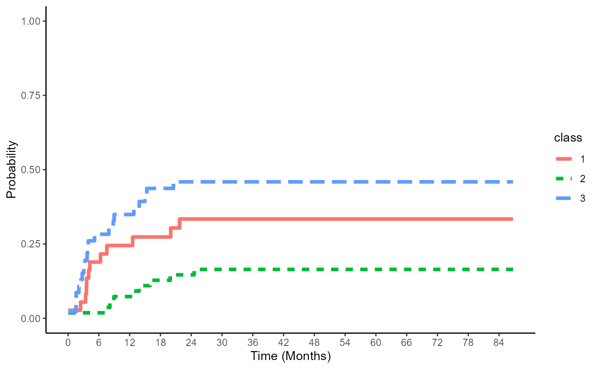
save results
write.csv(table_res3,"storer_CIF_res.csv")Bootstrap CI
FG model for event = relapse
result1_1 = boot_ci_adj_cif(boot_n=100,ci_cut=c(0.025,0.975),data = bmt,time = "t2", status = "CenCI",group = "arm",covlist = c("z1","z3"),event_code=1,"No",NULL)Figure
adjCIF_CI_plot(result1_1,bmt)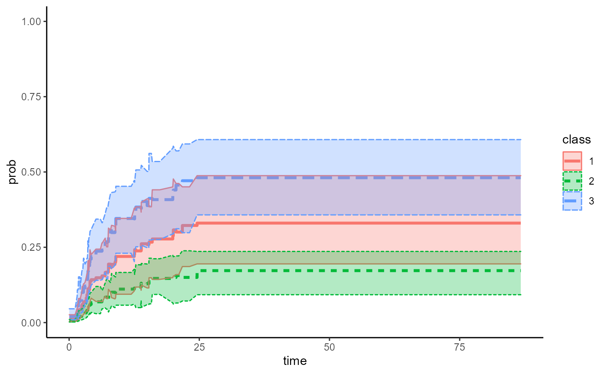
result1 = do.call(rbind,result1_1)
ggplot(data.frame(result1),aes(x=time,y = t_sub_mean, group =class ))+
geom_step(aes(linetype=class,color = class),size=1.2)+
geom_ribbon(aes(ymin=lower,ymax=upper,fill=class),alpha=0.3)+
ylim(c(0,1))+
theme_classic()+
scale_x_continuous(name = "Time (Months)",
breaks = seq(0, 84, 6)) +
ylab("Probability")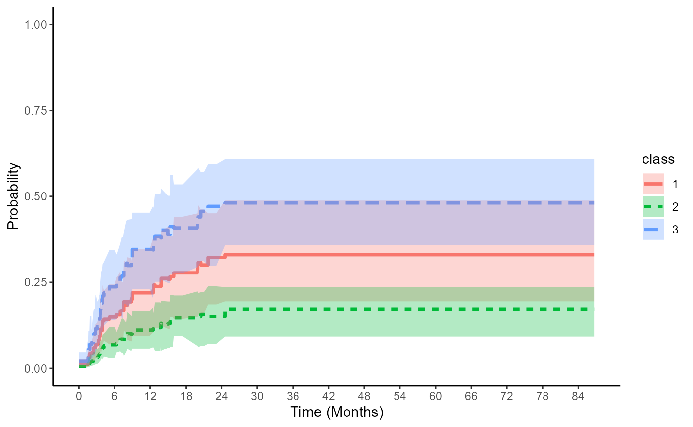
save bootstrap results
Stratified FG: G&B for event = relapse
result1_2 = boot_ci_adj_cif(boot_n=100,ci_cut=c(0.025,0.975),data = bmt,time = "t2", status = "CenCI",group = "arm",covlist = c("z1","z3"),event_code=1,"Yes","G&B")Figure
adjCIF_CI_plot(result1_2,bmt)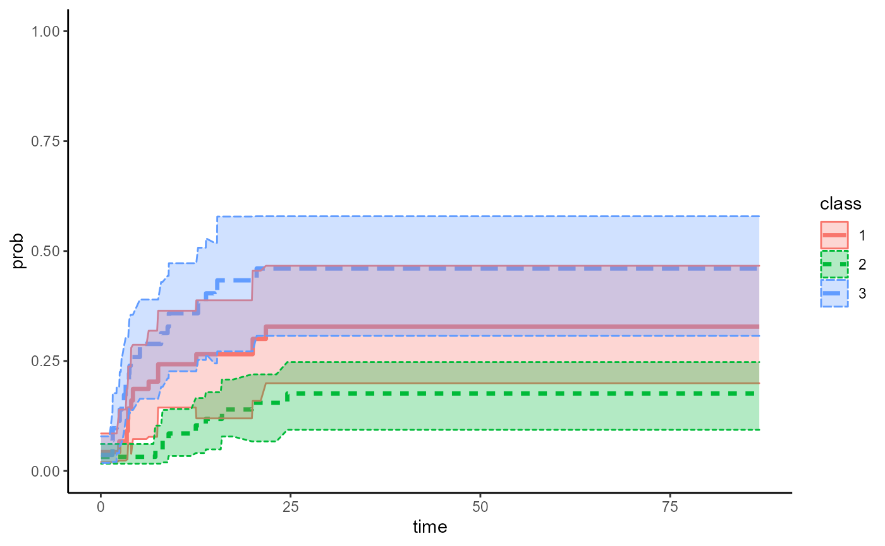
result2 = do.call(rbind,result1_2)
ggplot(data.frame(result2),aes(x=time,y = t_sub_mean, group =class ))+
geom_step(aes(linetype=class,color = class),size=1.2)+
geom_ribbon(aes(ymin=lower,ymax=upper,fill=class),alpha=0.3)+
ylim(c(0,1))+
theme_classic()+
scale_x_continuous(name = "Time (Months)",
breaks = seq(0, 84, 6)) +
ylab("Probability")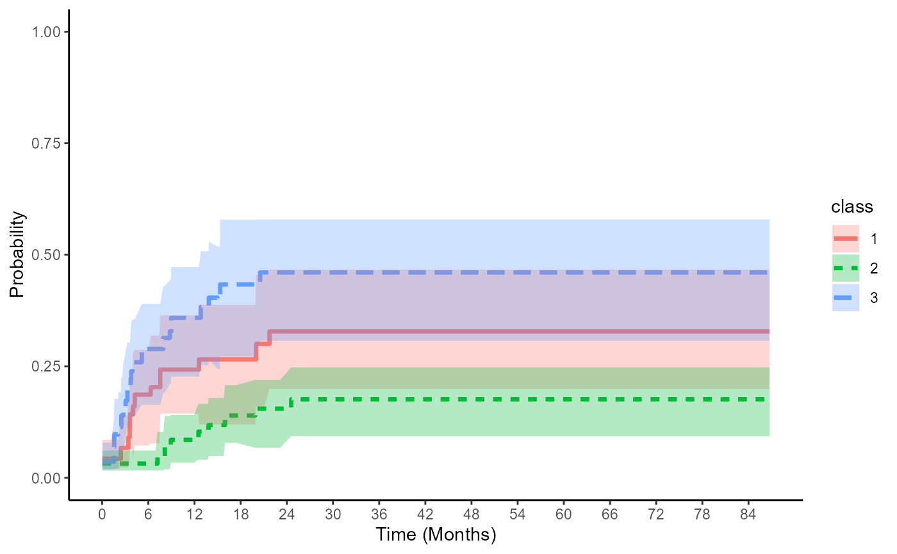
save bootstrap results
Stratified FG: Storer for event = relapse
# unstratified Fine-Gray regression model
result1_3 = boot_ci_adj_cif(boot_n=100,ci_cut=c(0.025,0.975),data = bmt,time = "t2", status = "CenCI",group = "arm",covlist = c("z1","z3"),event_code=1,"Yes","arm:2")Figure
adjCIF_CI_plot(result1_3,bmt)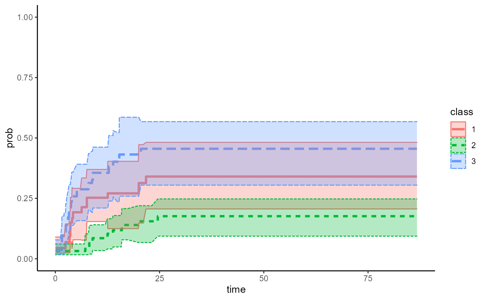
result3 = do.call(rbind,result1_3)
ggplot(data.frame(result3),aes(x=time,y = t_sub_mean, group =class ))+
geom_step(aes(linetype=class,color = class),size=1.2)+
geom_ribbon(aes(ymin=lower,ymax=upper,fill=class),alpha=0.3)+
ylim(c(0,1))+
theme_classic()+
scale_x_continuous(name = "Time (Months)",
breaks = seq(0, 84, 6)) +
ylab("Probability")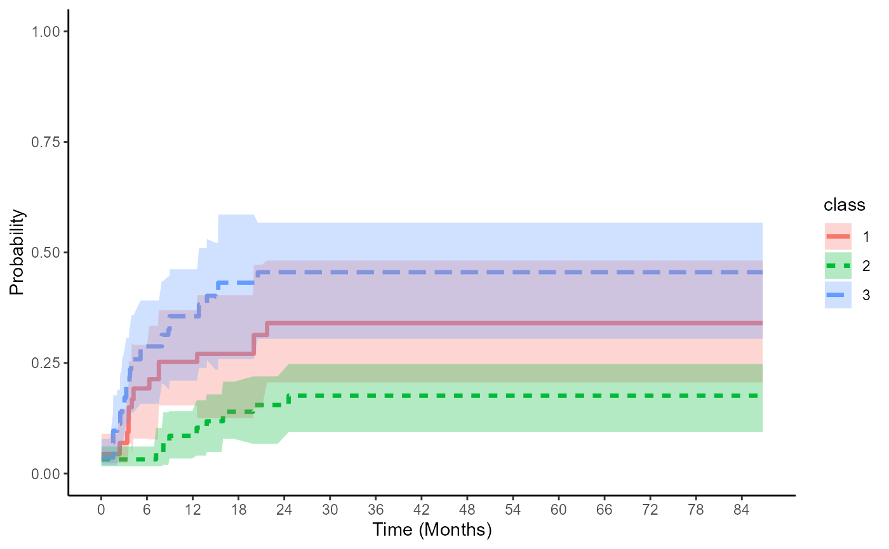
save bootstrap results